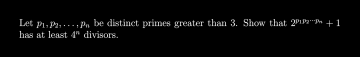
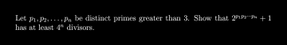

How does Contest Bot get what you want?
Let's say that instead of saying the simple command gimme 2002 ISL N3, you decided to make it harder on contest bot as such:
@Contest Bot, I was wondering if you could give me some of the ISL. In particular, I was looking at 2002 N3. Could you render that?
Now, if you wait for a bit, Contest Bot will reply:
Fetched IMO Shortlist 2002 N/3. Now trying to render that.
And soon enough, you'll get the following:
Here's IMO Shortlist 2002 N/3

 1
1
 1
1
Surprisingly, it understood! Let's see what it saw, and what it understood:

1
1
In the future, there may be further optimizations to this method, in which we can detect stuff like AMC 10A 2020 4. However, for now, put the contest in between the year and problem number (for example, use 2020 AMC 10A 4).
Copyright © Discord Contest Bot Team, 2020